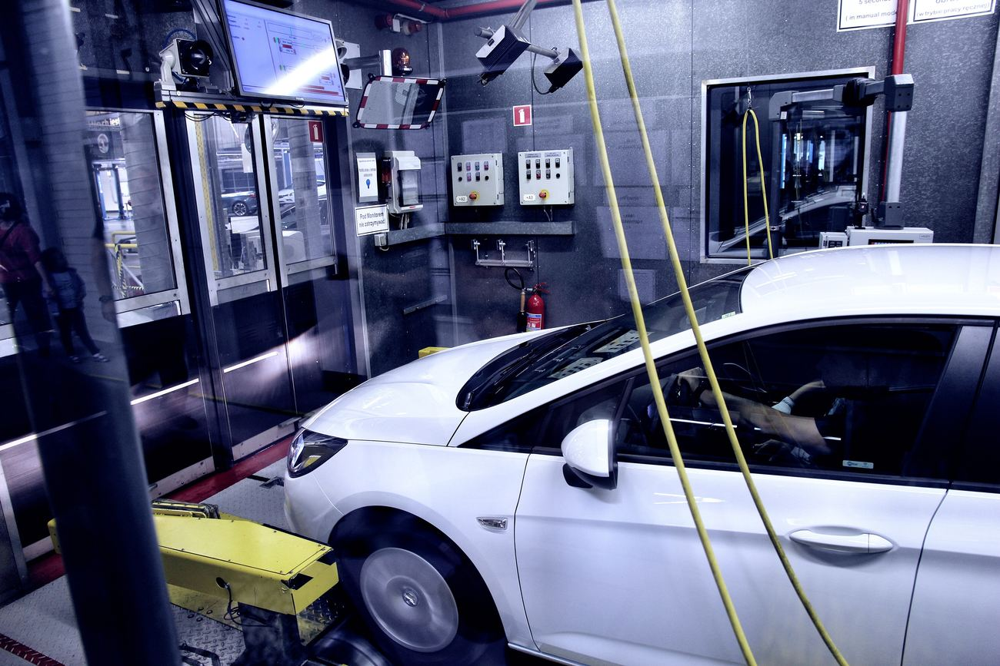
Chiptuning
Software-Optimierung
Stage 1 und Stage 2 für Benziner und Diesel — individuell abgestimmt und mit Prüfstandsprotokoll vorher und nachher.
ab€ 590
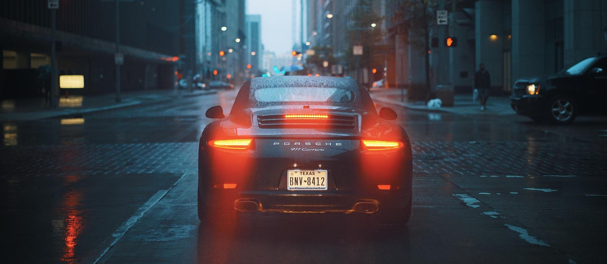
Software-Optimierung auf dem eigenen Prüfstand, Freischaltung versteckter Funktionen und Ambientebeleuchtung wie ab Werk — für BMW, Audi, VW, Mercedes, Porsche und mehr.
Viele Funktionen sind ab Werk schon verbaut — nur nicht aktiviert. Wir holen heraus, was in Motor, Steuergeräten und Innenraum steckt. Sauber dokumentiert und jederzeit rückrüstbar.

Stage 1 und Stage 2 für Benziner und Diesel — individuell abgestimmt und mit Prüfstandsprotokoll vorher und nachher.
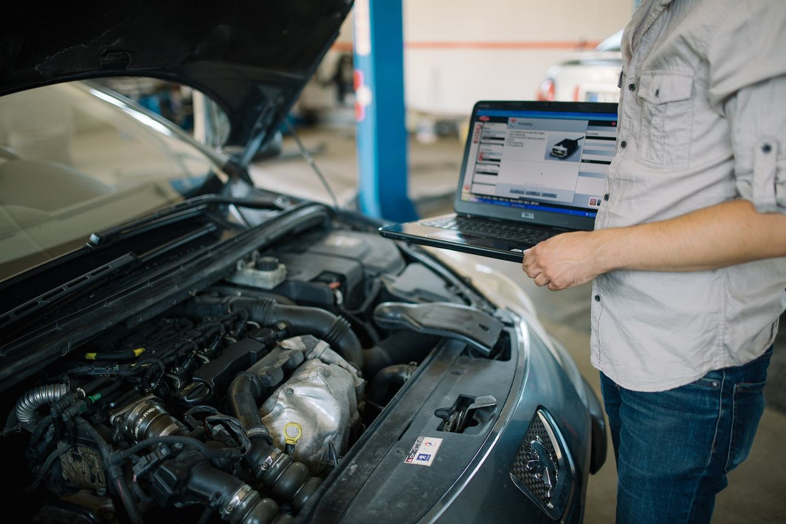
Sport-Anzeigen, Komfortfunktionen, Lichtfunktionen und Startbildschirme — wir codieren, was dein Auto schon an Bord hat.
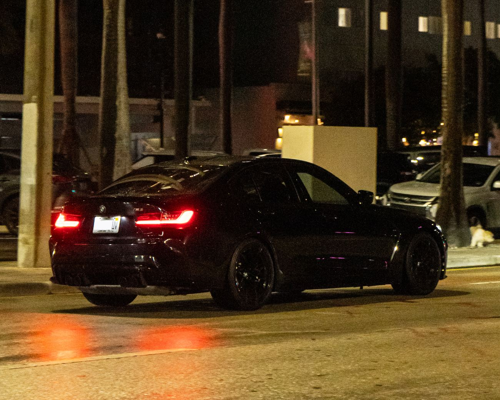
Elektronische Begrenzung anheben — mit Prüfung von Reifen-Index und Bremsen.
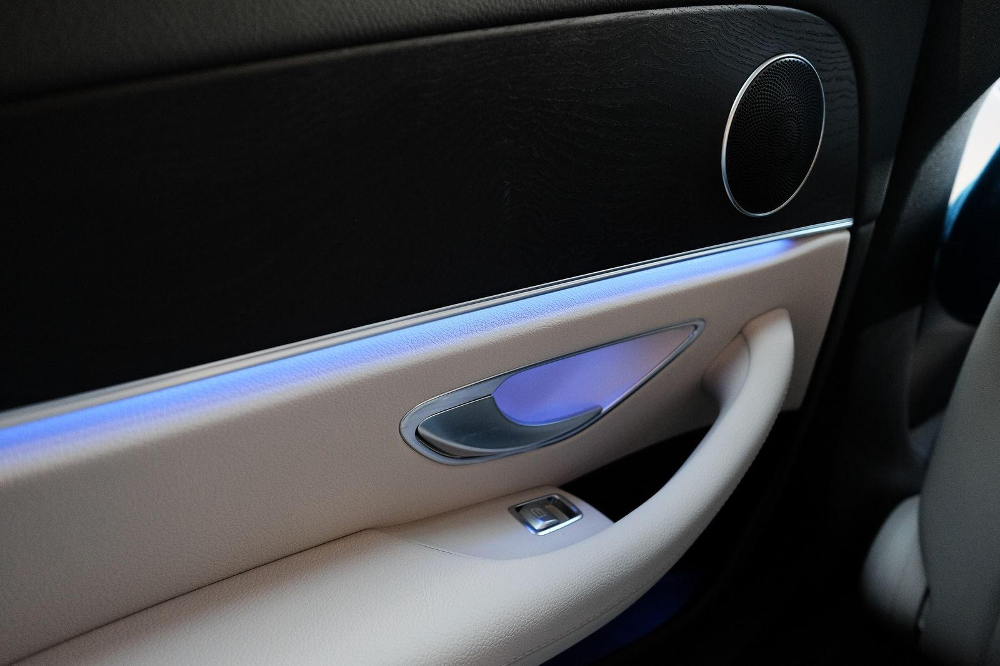
Bis zu 64 Farben, nahtlos integriert und über das Original-Menü steuerbar.
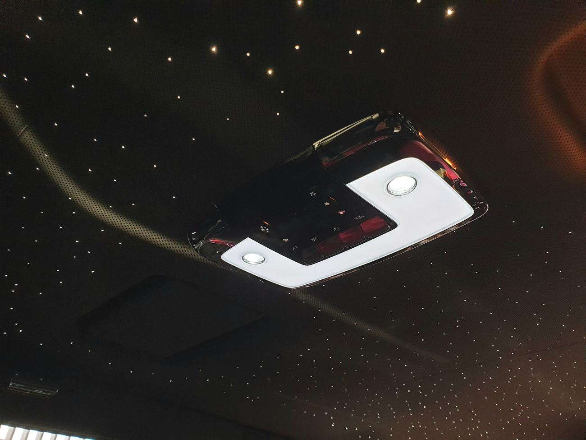
Bis zu 1.400 handgesetzte Glasfaser-Sterne — mit Funkel-Effekt.
Alle Steuergeräte auslesen, Fehler finden und dokumentieren.
CarPlay, Rückfahrkamera, Lenkradtasten und mehr nachrüsten.
Schnellere Schaltzeiten und angepasste Kennfelder für DSG und ZF.
Wir begleiten die Typisierung der Leistungssteigerung.
Marke und Modell wählen, Stufe festlegen — und sofort sehen, was Software-Optimierung bringt. Inklusive Prüfstandskurve und Festpreis.
Richtwerte. Die tatsächlichen Werte hängen vom Zustand des Fahrzeugs ab und werden vor und nach der Optimierung auf dem Prüfstand gemessen.
Wähle eine Farbe und einen Lichtmodus und sieh direkt, wie dein Innenraum bei Nacht wirkt. Wir rüsten Lichtleisten in Türen, Armaturenbrett und Fußraum nach — passend zum Original-Menü.
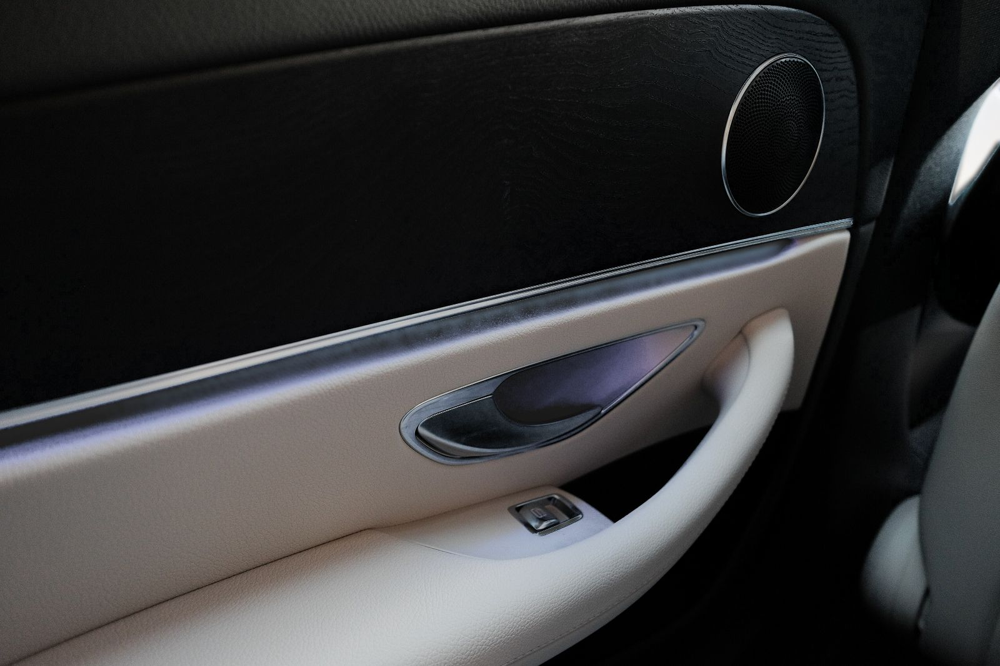
Türen & Armaturenbrett, 64 Farben
ab € 890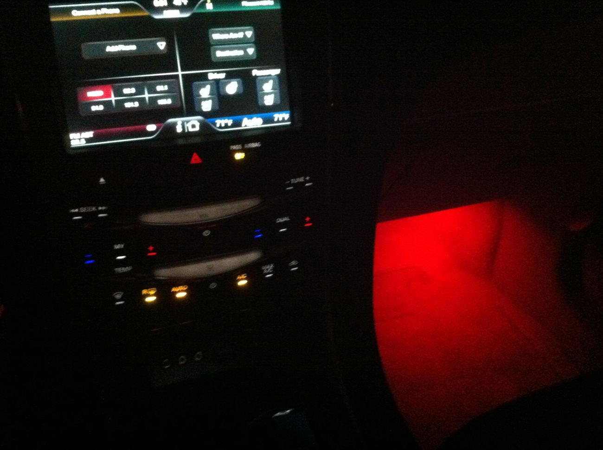
RGB, gekoppelt an das Ambiente
ab € 290Bis 1.400 Sterne mit Funkel-Effekt
ab € 1.290Wähle deine Wunschfunktionen und sieh sofort den Preis. Ab drei Funktionen gibt es 15 % Paketrabatt — Auslesen und Backup sind immer inklusive.
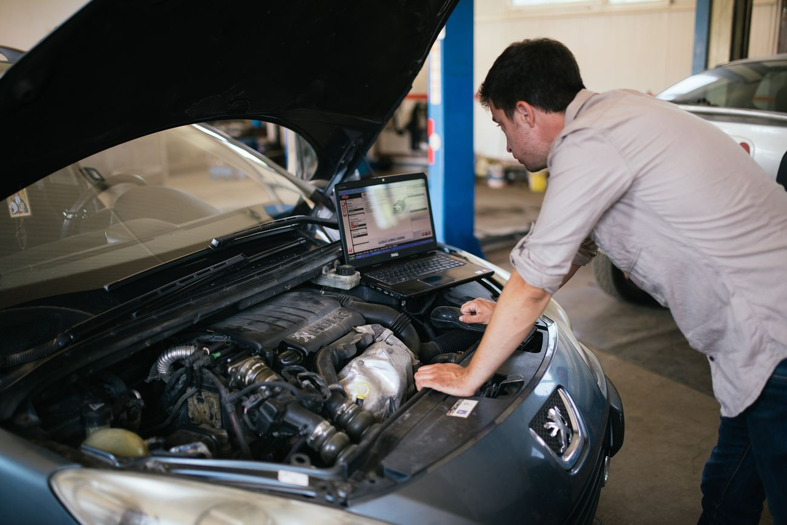
Eine Auswahl an Fahrzeugen, die in den letzten Monaten bei uns waren — mit gemessenen Werten vom Prüfstand.
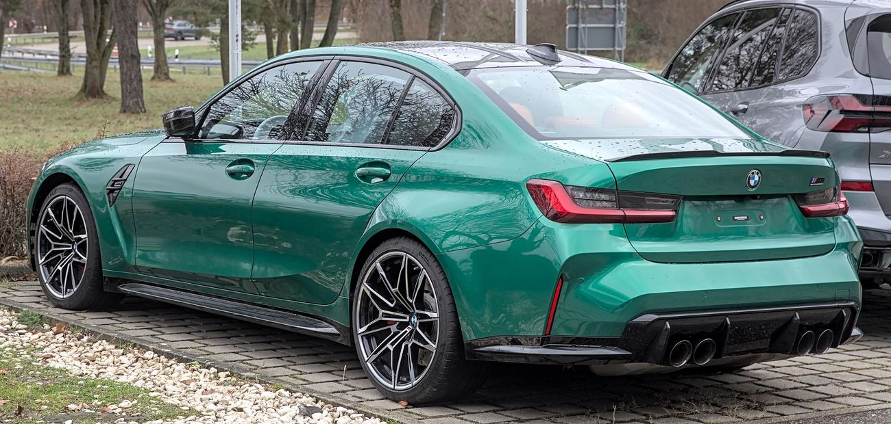
TuningStage 1 + Vmax-Aufhebung
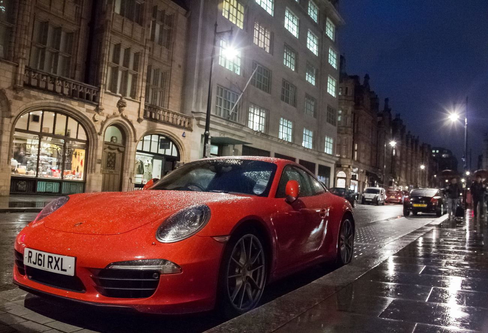
TuningStage 1 + Abgasklappen-Steuerung
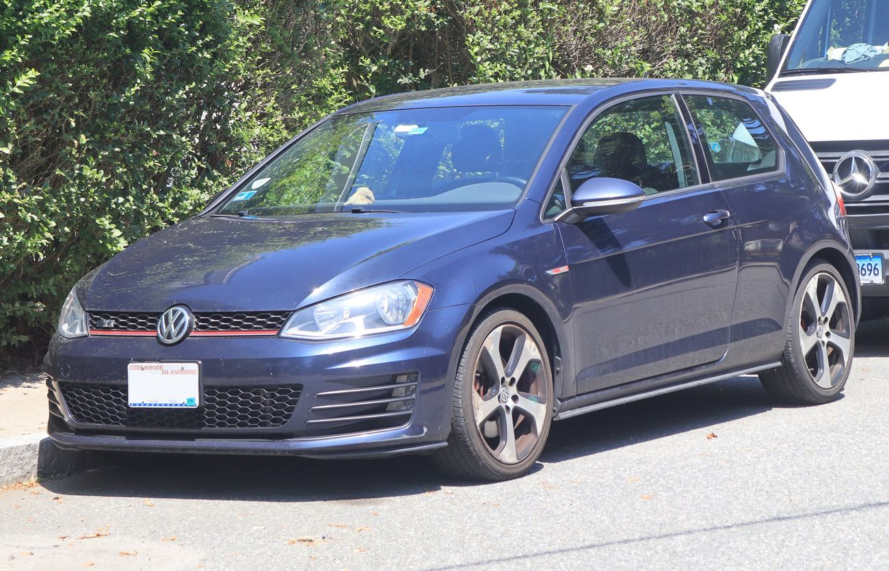
TuningStage 2 + DSG-Software
Sport-Displays, Lichtfunktionen, Komfort
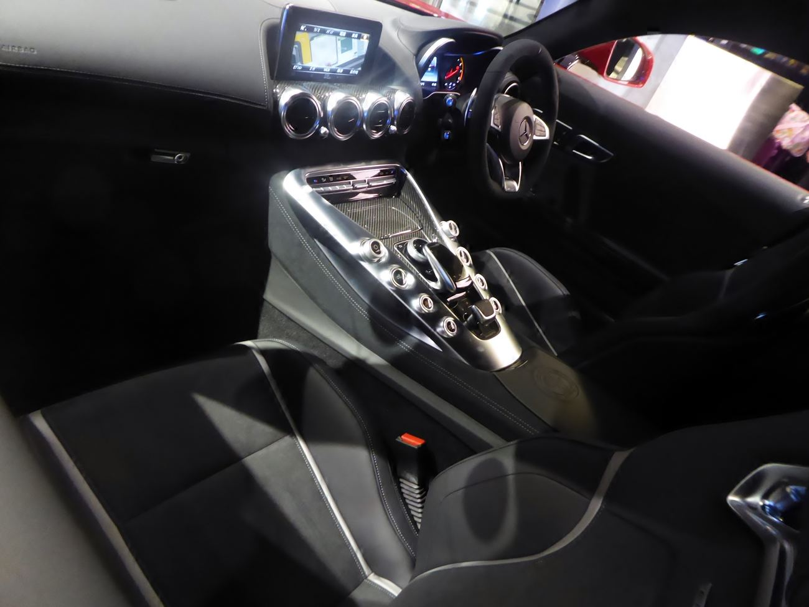
CodingAMG-Menü, Startbildschirm, Spiegel
Ambiente 64 Farben nachgerüstet
Glasfaser-Sterne mit Funkel-Modul
Nachrüstung, gekoppelt an das Ambiente
Transparent, dokumentiert und meistens am selben Tag erledigt. Du kannst gerne in unserer Lounge warten.
Online oder per Telefon. Wir klären Fahrzeug, Wünsche und das passende Paket.
5 Min.Fehlerspeicher auslesen, Zustand prüfen, Originalsoftware sichern.
20 Min.Optimierung, Codierung oder Nachrüstung durch unsere Techniker.
1–4 Std.Messung, Protokoll und kurze Einweisung in die neuen Funktionen.
30 Min.4,9 von 5 Sternen aus über 400 Bewertungen.
Stage 1 auf meinem Golf R — der Unterschied ist brutal, und das Auto läuft trotzdem ruhig und sauber. Prüfstandsprotokoll vorher und nachher, alles transparent.
Ambiente mit 64 Farben nachgerüstet — sieht aus wie ab Werk und lässt sich ganz normal über das Menü einstellen. Saubere Arbeit, keine Klappergeräusche.
Neun Funktionen in 45 Minuten codiert, während ich Kaffee getrunken habe. Fairer Preis und super erklärt.
Noch etwas unklar? Ruf uns an oder schreib uns — wir beraten dich gerne.
Ja, wenn die Leistungssteigerung eingetragen wird. Wir stellen die nötigen Unterlagen bereit und begleiten die Typisierung. Ohne Eintragung erlischt die Betriebserlaubnis — darauf weisen wir vor jedem Auftrag hin.
Wir bleiben innerhalb der Toleranzen der Bauteile und prüfen Ladedruck, Abgastemperatur und Lambda auf dem Prüfstand. Auf unsere Software geben wir 2 Jahre Garantie.
Jederzeit. Vor jeder Änderung sichern wir die Originalsoftware aller betroffenen Steuergeräte. Die Rückrüstung dauert meist unter 30 Minuten.
Reifen, Bremsen und Fahrwerk müssen zur neuen Höchstgeschwindigkeit passen. Wir prüfen den Geschwindigkeitsindex der Reifen und beraten dich, bevor wir etwas ändern.
Codierungen 30–60 Minuten, Chiptuning mit Prüfstand 2–3 Stunden, Ambientebeleuchtung je nach Umfang 1–2 Tage. Auf Wunsch stellen wir ein Ersatzfahrzeug.
Schreib uns dein Fahrzeug und deinen Wunsch — wir melden uns innerhalb von 24 Stunden mit einem Festpreis.